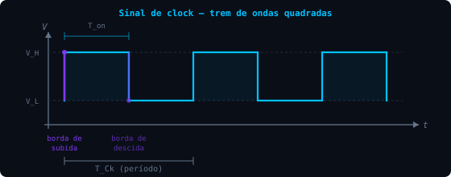
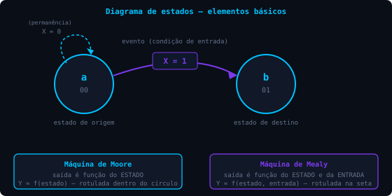

8.1 / conceito de sistemas sequenciais
Conceito de sistemas sequenciais
Nosso estudo tem sido dedicado até o momento aos circuitos combinacionais. Existe um segmento muito importante dos sistemas digitais, cujos circuitos são categorizados como circuitos sequenciais.
Uma aplicação importante é o controle de sistemas, em que sinais digitais são recebidos e interpretados, gerando saídas de controle de acordo com uma sequência em que os sinais são recebidos. Essas aplicações exigem que as saídas sejam uma função das entradas presentes e dos valores passados das entradas.

Fig. 8.1 — Sistema controlado por realimentação (feedback)
Na figura, circuito comparador recebe a saída do sistema no instante anterior; circuito controlado deve ser ajustado para obter as saídas desejadas. As entradas $x(t)$ vêm de outro módulo; $y(t)$ é obtido do feedback das saídas anteriores; $u(t)$ representa o comportamento desejado.
Distinção entre máquinas sequenciais e combinacionais
| Sequenciais | Combinacionais |
|---|---|
| Deve possuir capacidade de memória | A saída é estritamente função da entrada — não tem memória |
| Deve possuir realimentação | Não possui realimentação |
O modelo geral de máquinas sequenciais (ou máquinas de estados finitos) está na figura:

Fig. 8.2 — Modelo geral de sistemas sequenciais
- O primeiro bloco recebe entradas e saídas em feedback, produzindo entradas controladas;
- No segundo bloco, as saídas são armazenadas no elemento de memória para realimentar a entrada;
- No terceiro bloco, aplica-se a lógica necessária para produzir a saída desejada.
8.2 / circuitos síncronos e assíncronos
Circuitos síncronos e assíncronos
A classificação correta não se baseia apenas na presença do sinal de clock, mas em como as transições de estado se relacionam com ele:
Circuitos síncronos
Todas as mudanças de estado ocorrem sincronizadas pelas transições (bordas) do clock — o circuito só avança no instante em que o clock transiciona.
Circuitos assíncronos
As mudanças ocorrem a qualquer momento, assim que há mudança nas entradas, sem referência a um clock comum.

Fig. 8.3 — Sinal de clock: bordas de subida e descida, T_Ck e T_on
O clock é um trem de ondas quadradas, variando entre dois níveis. Para circuitos sequenciais, o evento relevante é a transição — não o nível em si. A transição possui uma borda de subida (baixo→alto) e uma borda de descida (alto→baixo).
Todo clock é periódico, com período $T_{Ck}$ e frequência:
A relação entre o tempo em nível alto e o período total é o duty cycle:
8.3 / máquina de estados
Máquina de estados
8.3.1 O diagrama de estados
Os circuitos sequenciais são classificados em: detectores de sequência, contadores e registradores, geradores de códigos, e sistemas controladores.
conceitos fundamentais
Estado: conjunto de informações sobre o sistema em um dado momento. Evento: o que provoca a mudança de estado. Transição: a mudança de um estado para outro.
O diagrama de estados representa o comportamento dinâmico de uma máquina sequencial: estados (rótulo), transições (seta origem→destino), eventos (variáveis de entrada) e saídas.
Modelos de Moore e Mealy
Máquina de Moore
A saída é função somente do estado atual: $Y = f(\text{estado})$.
Saída rotulada dentro do círculo do estado.
Máquina de Mealy
A saída é função do estado e da entrada: $Y = f(\text{estado}, \text{entrada})$.
Saída rotulada sobre a seta de transição.

Fig. 8.4 — Elementos do diagrama de estados e distinção Moore/Mealy
Exemplo 1 — máquina de Moore

Fig. 8.5 — Exemplo 1: saída (A,B) associada a cada estado
- O estado a produz saída 00 (A=0, B=0).
- Quando X=0, o sistema permanece no estado atual.
- Quando X passa a 1, transição a→b: B passa de 0 a 1, A não se altera.
- De b, X=1 leva a c: B volta a 0, A passa a 1; senão permanece.
- De c, X=1 leva a d: B passa a 1, A permanece 1; senão permanece.
- De d, X=1 retorna ao estado inicial (A=0,B=0), renovando o ciclo.
No caso síncrono, a transição depende também do clock: a mudança de LOW para HIGH é chamada de disparo pela borda (edge-triggered). Mantido X=1, as transições 00-01-10-11 ocorrem a cada borda de subida do clock.

Fig. 8.6 — Diagrama de blocos da máquina sequencial
Exemplo 2 — máquina de Mealy

Fig. 8.7 — Exemplo 2: variável Z associada à transição (Mealy)
Usa-se o próprio código dos estados, em vez de símbolos. A variável Z tem valor associado a cada transição — não é variável de estado, característica do modelo Mealy.

Fig. 8.8 — Esquema em blocos do exemplo 2
8.3.2 Análise de circuitos sequenciais síncronos
Na análise é necessário determinar: a classe do circuito (combinacional/sequencial), se síncrono/assíncrono, e o que se deseja obter.
- Identificar os estados;
- Identificar as entradas relacionadas com as mudanças de estado;
- Identificar as sequências de transições.
Ferramenta importante: o mapa de próximo estado para cada saída. Para o exemplo 1, o comportamento da saída A:
| AB | 00 | 01 | 11 | 10 |
|---|---|---|---|---|
| X=0 | 0 | 0 | 1 | 1 |
| X=1 | 0 | 1 | 0 | 1 |
Quando X=0, o estado permanece — A não muda na borda de clock. Quando X=1, a saída é 1 nas transições 01→10 e 10→11.
Comportamento da saída B:
| AB | 00 | 01 | 11 | 10 |
|---|---|---|---|---|
| X=0 | 0 | 1 | 1 | 0 |
| X=1 | 1 | 0 | 1 | 0 |
Para o exemplo 2, saída A:
| AB | 00 | 01 | 11 | 10 |
|---|---|---|---|---|
| X=0 | 0 | 1 | 0 | 0 |
| X=1 | 0 | 1 | 0 | 0 |
Saída B:
| AB | 00 | 01 | 11 | 10 |
|---|---|---|---|---|
| X=0 | 0 | 1 | 1 | 0 |
| X=1 | 1 | 0 | 0 | 1 |
Saída Z (variável de Mealy, associada à transição):
| AB | 00 | 01 | 11 | 10 |
|---|---|---|---|---|
| X=0 | 0 | 1 | 1 | 1 |
| X=1 | 0 | 0 | 1 | 0 |
A partir dos mapas, escreve-se a expressão booleana de cada saída de próximo estado — similar ao Mapa K:

Fig. 8.9 — Mapa K para as saídas A e B do exemplo 1
8.3.3 / exemplos práticos
Exemplos de projeto
Sistema de controle de elevador
Circuito sequencial que controla um elevador operando em quatro andares: S₀, S₁, S₂, S₃.
- X₁ Botão de subir pressionado
- X₂ Botão de descer pressionado
- Y 1 = em movimento · 0 = parado
O elevador começa no térreo (S₀); X₁=1 sobe até S₃; X₂=1 desce até S₀.
| Estado | X₁=0,X₂=0 | X₁=1,X₂=0 | X₁=0,X₂=1 | X₁=1,X₂=1 |
|---|---|---|---|---|
| S₀ | S₀ (Parado) | S₁ (Sobe) | S₀ (Parado) | S₁ (Sobe) |
| S₁ | S₁ (Parado) | S₂ (Sobe) | S₀ (Desce) | S₁ (Parado) |
| S₂ | S₂ (Parado) | S₃ (Sobe) | S₁ (Desce) | S₂ (Parado) |
| S₃ | S₃ (Parado) | S₃ (Parado) | S₂ (Desce) | S₃ (Parado) |
Circuito de controle digital de portão
Controla a abertura/fechamento de um portão automático com quatro estados.
- S₀ Totalmente fechado
- S₁ Abrindo
- S₂ Totalmente aberto
- S₃ Fechando
- X₁ Sensor de abertura
- X₂ Sensor de fechamento
- Y 1 = em movimento · 0 = parado
| Estado | X₁=0,X₂=0 | X₁=1,X₂=0 | X₁=0,X₂=1 | X₁=1,X₂=1 |
|---|---|---|---|---|
| S₀ | S₀ (Parado) | S₁ (Abrindo) | S₀ (Parado) | S₁ (Abrindo) |
| S₁ | S₁ (Abrindo) | S₂ (Aberto) | S₃ (Fechando) | S₁ (Abrindo) |
| S₂ | S₂ (Aberto) | S₂ (Aberto) | S₃ (Fechando) | S₃ (Fechando) |
| S₃ | S₃ (Fechando) | S₁ (Abrindo) | S₀ (Fechado) | S₃ (Fechando) |
Contador crescente de 3 bits — saída para números ímpares
Contador de 0 a 7 cuja saída é 1 quando o valor contado é ímpar.
- Estados 8 estados (S₀ a S₇), valores binários de 3 bits
- Entradas Apenas o clock — sem entradas de controle
- Y 1 = ímpar (S₁,S₃,S₅,S₇) · 0 = par (S₀,S₂,S₄,S₆)
| Estado Atual | Próximo Estado | Saída Y |
|---|---|---|
| S₀ (000) | S₁ (001) | 0 |
| S₁ (001) | S₂ (010) | 1 |
| S₂ (010) | S₃ (011) | 0 |
| S₃ (011) | S₄ (100) | 1 |
| S₄ (100) | S₅ (101) | 0 |
| S₅ (101) | S₆ (110) | 1 |
| S₆ (110) | S₇ (111) | 0 |
| S₇ (111) | S₀ (000) | 1 |
Esse exercício permite estudar o comportamento de contadores sequenciais e a lógica associada a saídas que dependem de condições específicas nos estados, como identificar números ímpares.
checkpoint
Teste seus conhecimentos
O que diferencia um circuito sequencial de um combinacional?
Em uma máquina de Mealy, a saída é função de:
Um circuito síncrono muda de estado:
No contador de 3 bits do exemplo C, a saída Y depende de:
referências e aprofundamento